Cliquez sur « Edit/Fork on Codepen » (en haut à droite).
Dans l'onglet CSS, entrez des valeurs pour les trois propriétés de l'exemple suivant et cliquez sur « Result » pour voir le résultat.
Sélecteur groupé
Un sélecteur groupé applique la même règle à plusieurs éléments, séparés par des virgules.
h1, h2, h3 { ...
Dans l'exemple ci-dessus, la règle de style va s'appliquer à toutes les balises <h1>, <h2> et <h3>.
Sélecteur composé
Un sélecteur composé cible des éléments en relation hiérarchique (séparés par des espaces, sans virgules).
ul li a { ...
Dans l'exemple ci-dessus, la règle s’appliquera uniquement aux <a> contenus dans un <li> placé dans un <ul>.
Déclaration
Les déclarations sont placées entre les accolades pour les isoler des sélecteurs. Chaque déclaration est composée d'une propriété et d'une valeur CSS séparées par un deux-points (:), le tout se terminant par un point-virgule (;)
La couleur est un aspect fondamental de la présentation visuelle : elle affecte tant le texte que les fonds, bordures et autres éléments graphiques. En CSS, on dispose de plusieurs façons de définir une couleur, chacune adaptée à des besoins différents (précision, compatibilité, effets de transparence…).
Méthode
Description
Exemple d’utilisation
Notation hexadécimale longue
Code commençant par #, suivi de 6 chiffres hexadécimaux (RR, GG, BB).
color: #0a4dee
Notation hexadécimale courte
Un seul chiffre par composante, dupliqué implicitement.
L'exercice 3 est une initiation à l'incorporation de règles de style dans un document CSS.
Documents à remettre
Un dossier rigoureusement nommé grX_nomInitialeprenom_ex3 (remplacez X par votre numéro de groupe) contenant les fichiers suivants:
Structure de fichiers de l'exercice 3
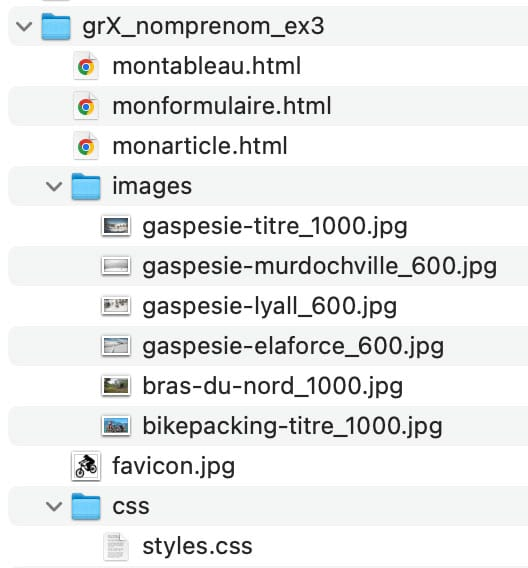
Échéancier
Remettez l'archive zippée sur LÉA au plus tard le jeudi suivant à 8h.
Travail à faire
Les règles de style que vous allez soit copier, soit rédiger, dans les étapes qui suivent, doivent être mises en forme comme le montre l'exemple suivant, c'est-à-dire:
chaque ligne indentée (avec la touche TAB )
une déclaration par ligne
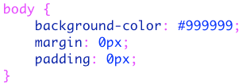
A. Préparer votre dossier de travail
Téléchargez et décompressez l'archive Ex3.zip . Renommez ce dossier selon la nomenclature habituel grX_nomprenom_ex3.
Dans la colonne de gauche de VSC, ouvrez le dossiergrX_nomInitialeprenom_ex3 grâce à l'option Ouvrir...; vous aurez ainsi accès à tous les fichiers et dossiers s'y trouvant.
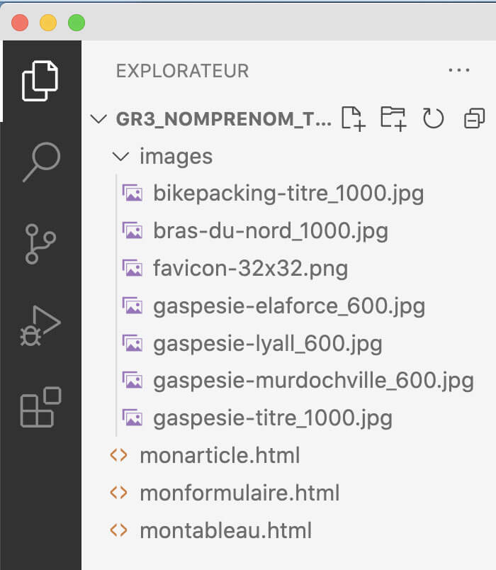
Complétez votre structure de dossiers
Dans la colonne de gauche de VSC, créez un nouveau dossier (New folder...) en cliquant sur l'icône et nommez-le «css».
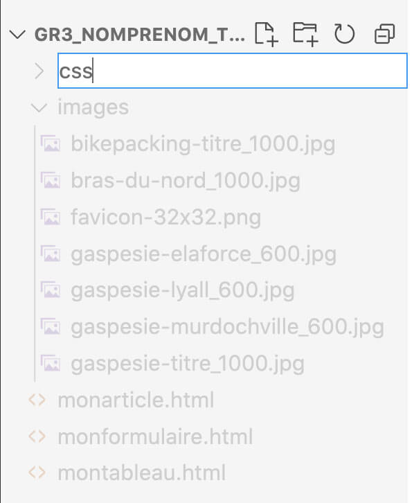
Créez le fichier styles.css à l'intérieur du dossier css Dans votre dossier de travail, repérez le dossier css et cliquez-droit sur ce dossier: choisissez Nouveau fichier (New file...) et nommez ce fichier styles.css.
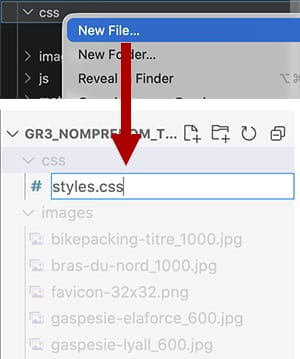
Assurez-vous que le fichier styles.css est bien à l'intérieur du dossier css, sinon, faites-le glisser dans ce dossier.
Liez la feuille de style aux documents HTML
Afin de lier ce fichier .css au document HTML, faites d'abord afficher le document monarticle.html en cliquant dessus, et insérez la ligne de code suivante à la suite de <title> à l'intérieur de l'élément <head> :
Insérez dans le 'head' la ligne de code surlignée en bleu
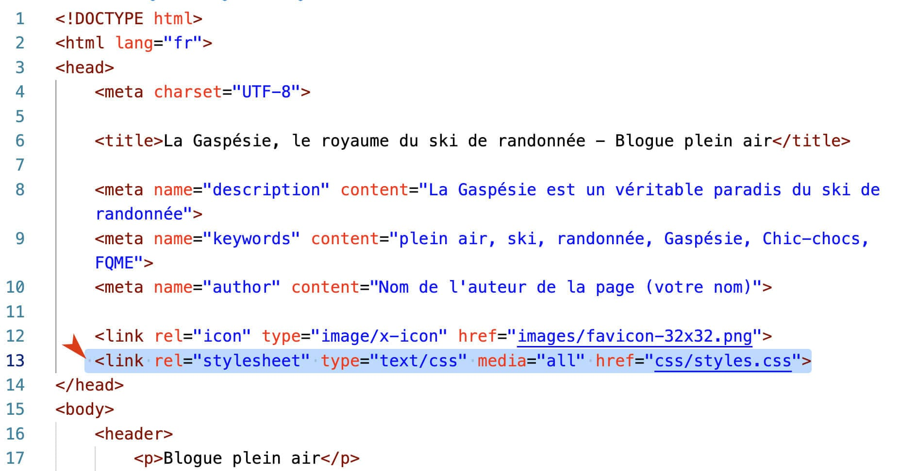
Répétez cette opération dans les fichiers monformulaire.html et montableau.html.
Ouvrez le document monarticle.html dans le navigateur Google Chrome. Remarquez que son apparence est identique au travail réalisé dans les dernières leçons.
B. Réinitialisation des styles et rédaction de la charte typographique
Nous allons maintenant rédiger nos premières règles de styles pour personnaliser l'apparence de nos documents.
Dans VSC, ouvrez le document styles.css. Ce document est actuellement vide.
Insérez-y l'entièreté du code suivant:
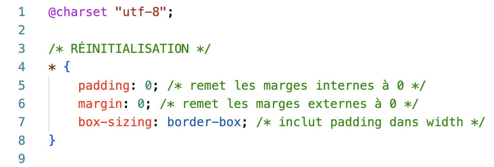
À retenir
Il est essentiel que la première ligne d'un document CSS débute avec la déclaration du codage: @charset "utf-8";.
Les lignes 3 à 8 correspondent aux règles de style pour réinitialiser les valeurs de marges internes et externes de tous les éléments HTML.
Les commentaires CSS sont délimités ainsi: /* Commentaire css */
Actualisez l'affichage de votre navigateur et constatez le résultat: les marges en bordure du document, ainsi qu'entre les titres et les paragraphes ont disparu :
Insérez des valeurs à margin et padding (par exemple: 50px) pour en voir l'effet, puis remettez le tout à zéro.
Charte typographique: Dans votre feuille de style, à la suite du code s'y trouvant, insérez le code suivant :
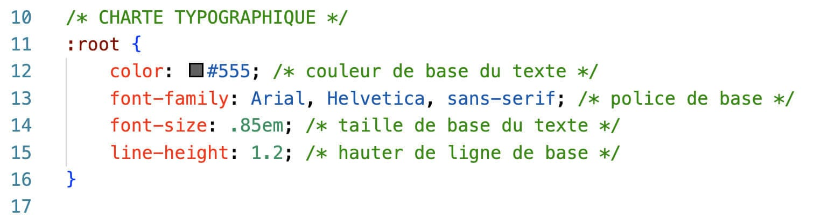
Notez le changement obtenu dans le navigateur: la police de caractères a été modifiée :
Votre document styles.css contient maintenant les trois éléments essentiels de base d'une feuille de style CSS. Ces éléments seront mis en place dans tous les prochains travaux de la session.
La déclaration du codage: @charset "utf-8";.
La réinitialisation des styles
La charte typographique
C. Personnalisation des styles visuels des pages
Dans les trois documents HTML (monarticle.html, monformulaire.html et montableau.html), insérez les conteneursheader, nav, main et footer comme le montre l'image suivante. Cette étape est cruciale avant de continuer la rédaction des règles de style, car les règles de style y font référence. Insertion d'éléments de structure dans le code HTML
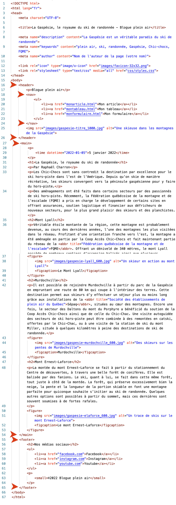
Mise en forme des éléments de structure Dans le fichier styles.css, insérez les règles suivantes qui définissent la mise en forme des éléments de structure ajoutés à vos documents.
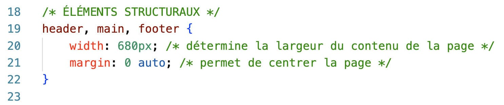
La propriété width limite la largeur des lignes de texte pour rendre la lecture plus agréable.
Les marges automatiques (margin: 0 auto) à gauche et à droite permettent de centrer le corps de l'article sur la page:
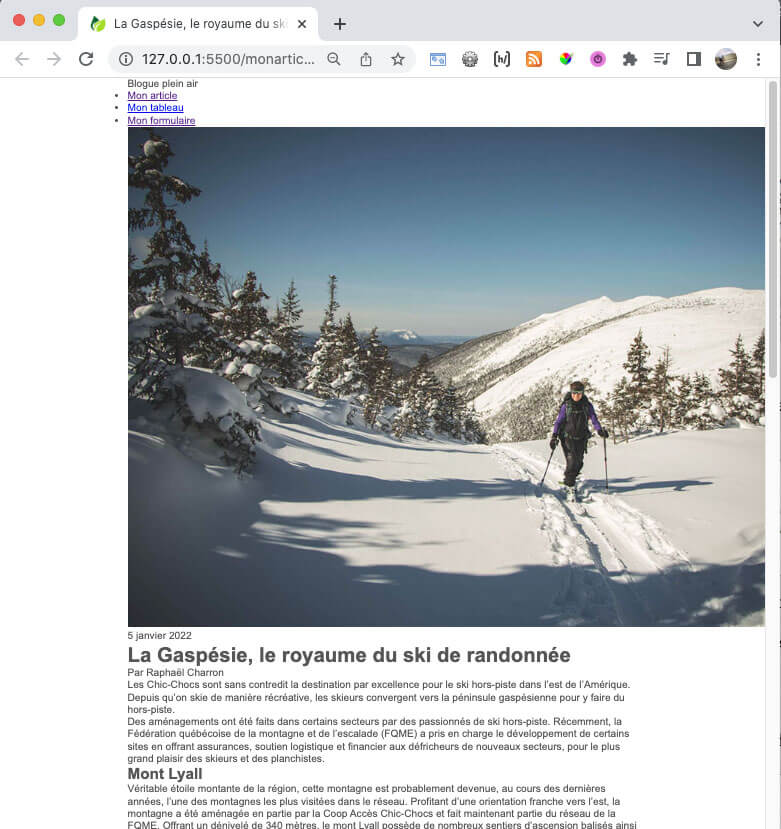
Mise en forme des hyperliens Insérez les règles suivantes qui définissent la mise en forme des hyperliens de tout le document :
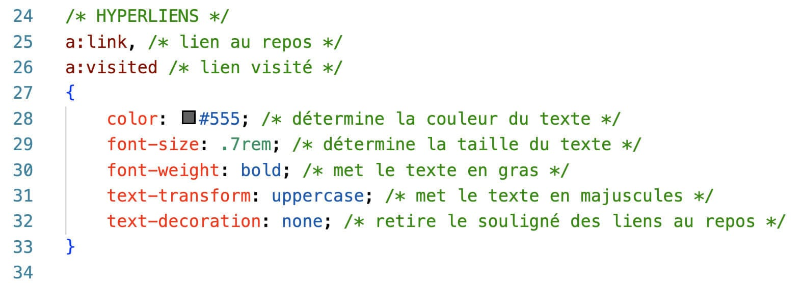
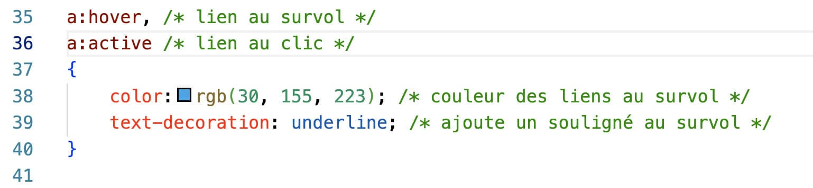
Ce code façonne les états des hyperliens; survolez les liens pour noter l'état au survol :
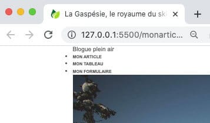
4. Mise en forme générale des paragraphes
Définissez maintenant l'allure générale des paragraphes en insérant le code suivant dans votre feuille de style :
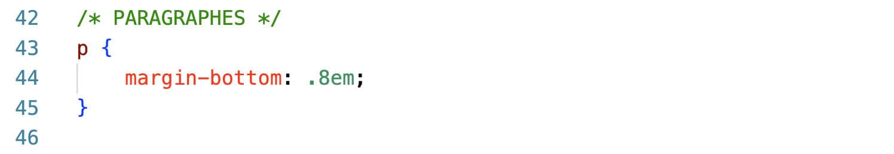
Notez la moficiation de l'espace entre les paragraphes :
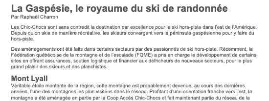
5. Mise en forme des titres
Insérez le code suivant dans votre feuille de style pour mettre en forme les titres et sous-titres :
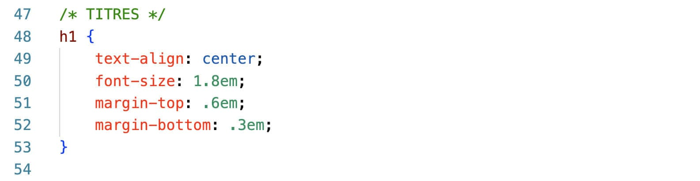
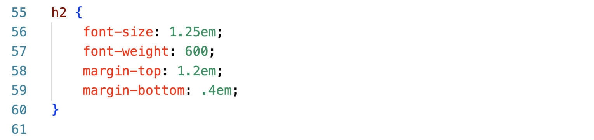
Notez que la taille des caractères, l'alignement du texte et ses marges ont changé :
N'hésitez pas à modifier la taille et la couleur pour expérimenter.
6. Mise en forme des images et de la vidéo
Ajoutez ce code pour mettre en forme les images et la vidéo :
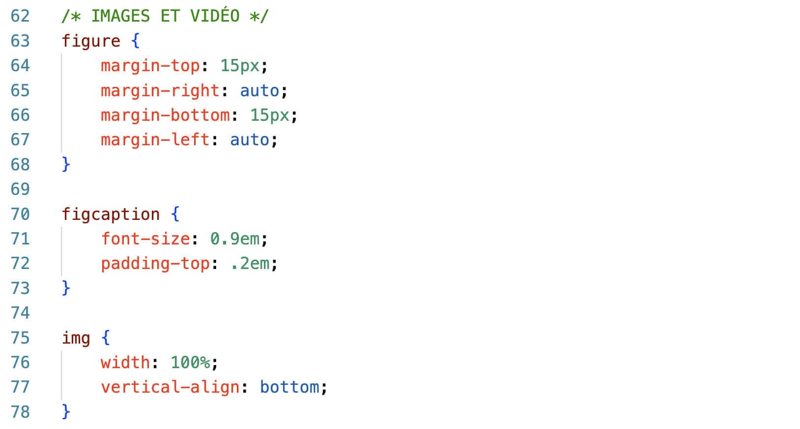
Remarquez comment les marges et l'alignement de l'image et du figcaption s'ajustent :
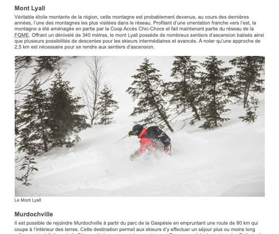
7. Mise en forme du contenu de 'header'
Inscrivez ce code pour mettre en forme le contenu de 'header' :
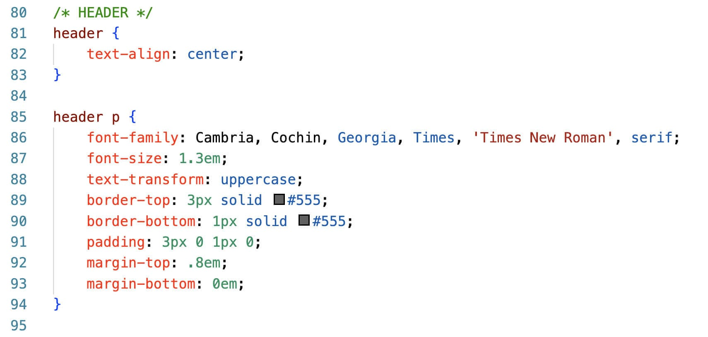
D'entrée de jeu, le texte est centré.
Ensuite, pour sélectionner le nom du site, on utilise un sélecteur composé (header p) qui vise le paragraphe inclus dans header :
Le type, la casse et la taille de la police sont ajustés, et vous noterez l'ajout de bordures en haut et en bas :
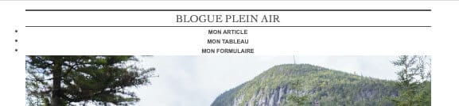
8. Mise en forme de la navigation principale
Écrivez la règle suivante pour raffiner la mise en forme de la navigation principale :
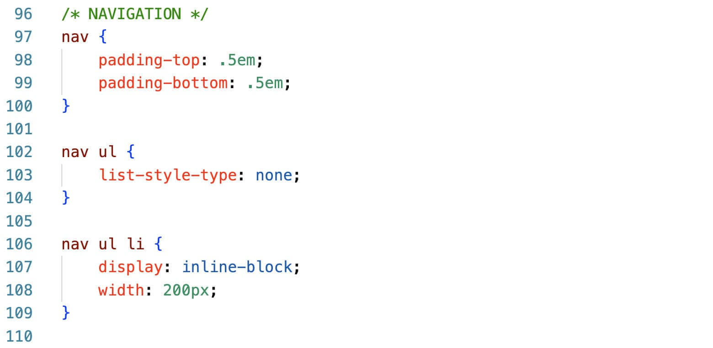
Le sélecteur de type nav permet d'ajouter de l'espacement dans le haut et le bas du menu.
Le sélecteur ul de son côté présente la déclaration list-style-type:none qui élimine les boulets de la liste, et la déclaration display:inline-block qui place les éléments de liste côte-à-côte tout en permettant d'attributer une largeur fixe :
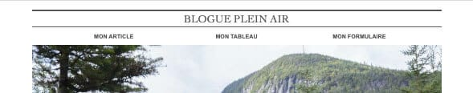
9. Mise en forme la section principale 'main'
Rédigez cette règle à la suite des autres :
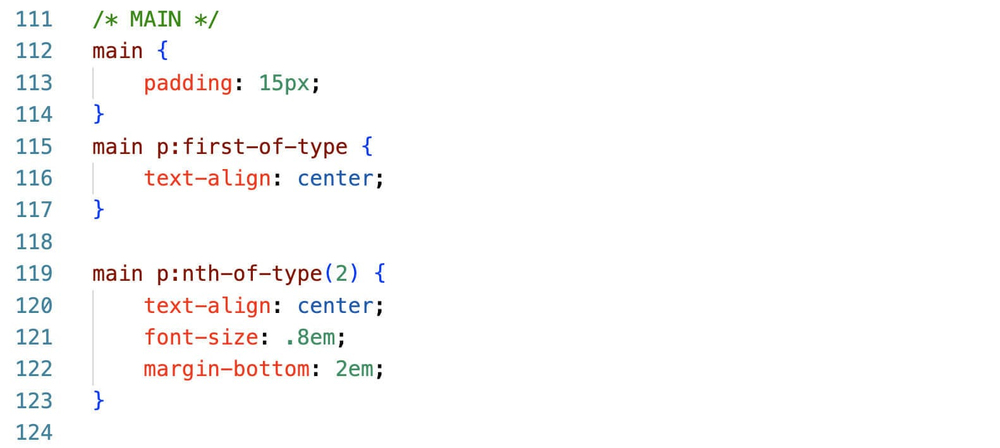
Les sélecteurs p:first-of-type et p:nth-of-type(2) permettent de sélectionner les premier (date) et deuxième (source) éléments de type 'p' à l'intérieur du conteneur 'main' :
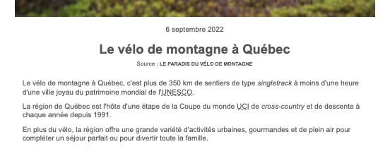
10. Mise en forme du formulaire
La mise en forme du formulaire nécessite un peu de balisage supplémentaire pour effectuer un travail satisfaisant.
Insérez les éléments 'div' suivants afin d'améliorer la structure des couples label+input :
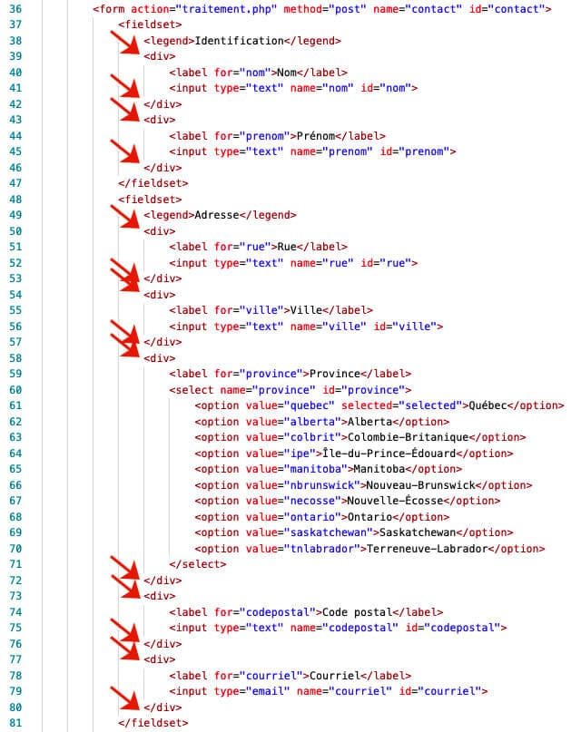
Afin de structurer les groupes de boutons radio et de cases à cocher, insérez les éléments 'ul' et 'li' suivants :
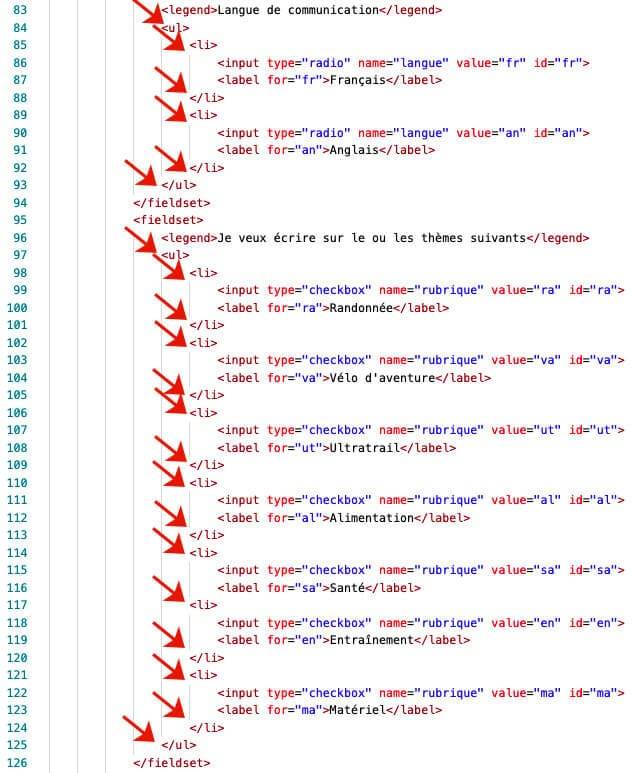
Écrivez cette règle pour mettre en forme le formulaire à l'aide des sélecteurs qui permettent de pointer les éléments spécifiques de celui-ci :
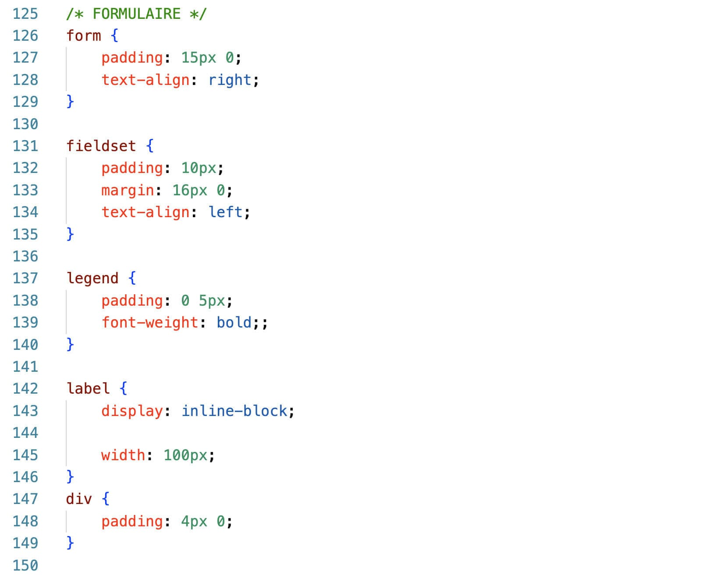
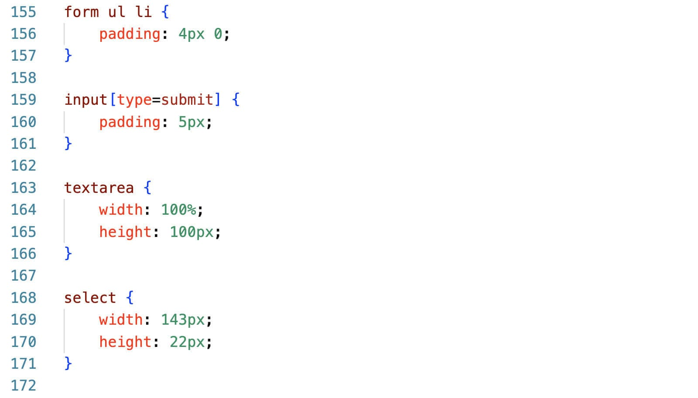
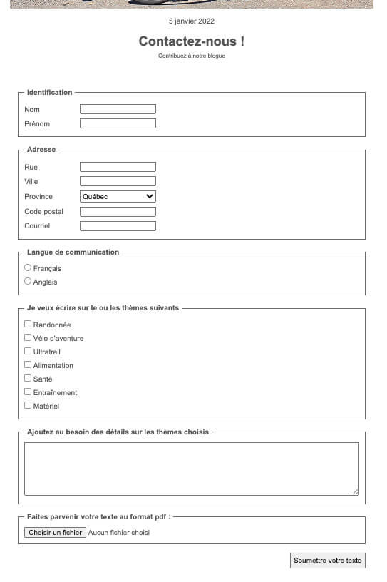
11. Mise en forme du tableau
Ajoutez les règles suivantes pour mettre en forme le tableau de la page montableau.html :
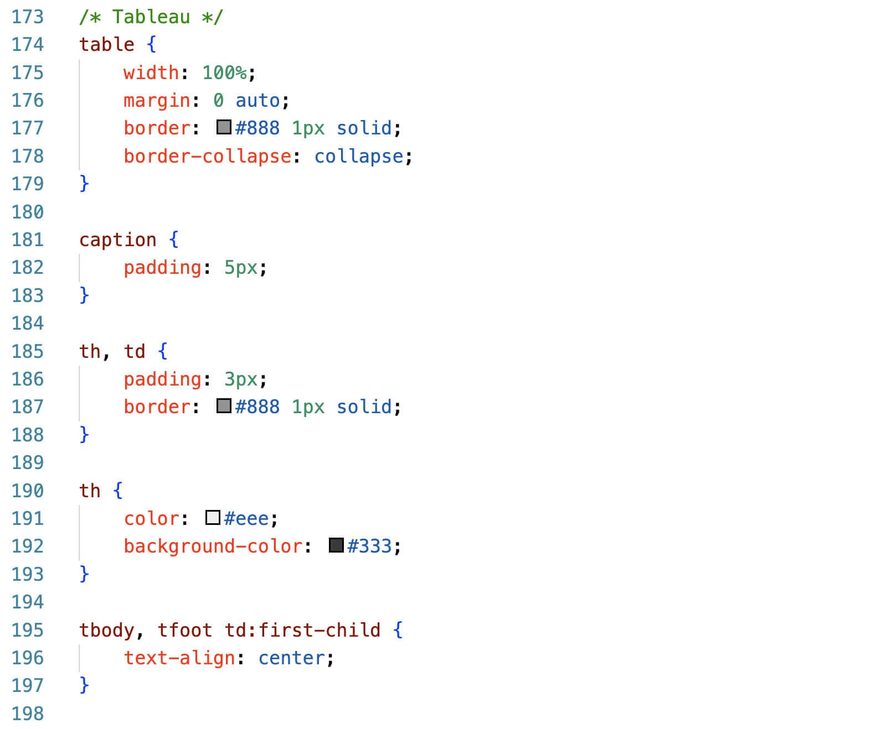
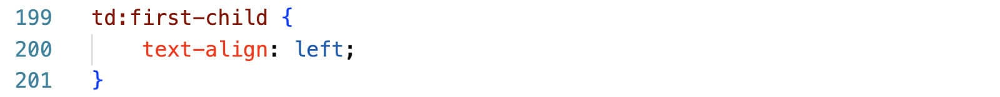
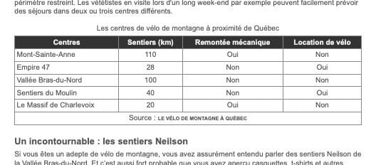
12. Mise en forme du pied de page 'footer'
Ajoutez la règle suivante pour mettre en forme le pied de page :
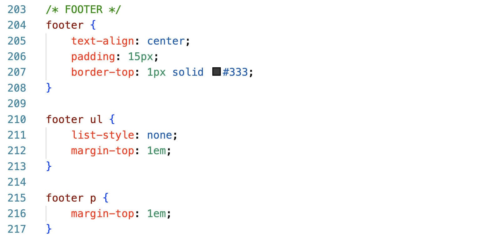
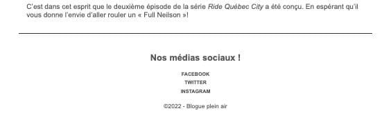
À ce stade, le résultat devrait ressembler à ceci :
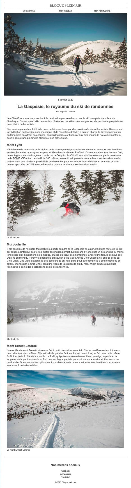
13. Défi #1 : Personnalisez la couleur des liens de la navigation principale
Analysez les règles de style utilisées pour mettre en forme les hyperliens.
Modifiez la couleur des liens de la navigation principale (ceux qui se trouvent dans l'élément nav), sans affecter les autres liens du document.
14. Défi #2 : Ajoutez une lettrine
L'ajout d'une lettrine donnerait un chic fou à votre article.
En vous inspirant de l'exemple Codepen plus bas, relevez le défi d'ajouter une lettrine au premier paragraphe de texte du contenu principal.
Exemple de lettrine dansla page monarticle.html. Elle s'affichera également dans les deux autres pages.
Attention: la lettrine ne doit s'appliquer qu'au premier paragraphe de chaque page !
Modifiez ensuite les déclarations suivantes afin d'ajuster la lettrine à vos documents :